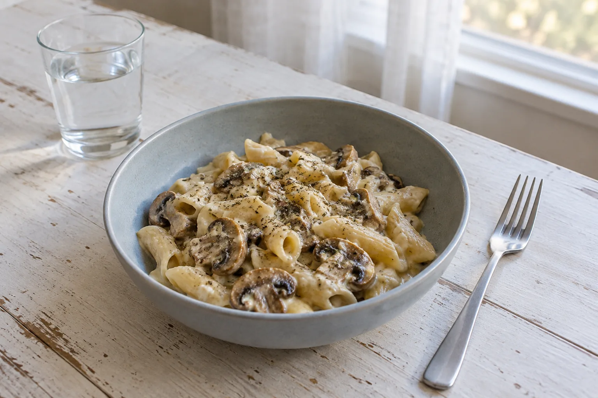
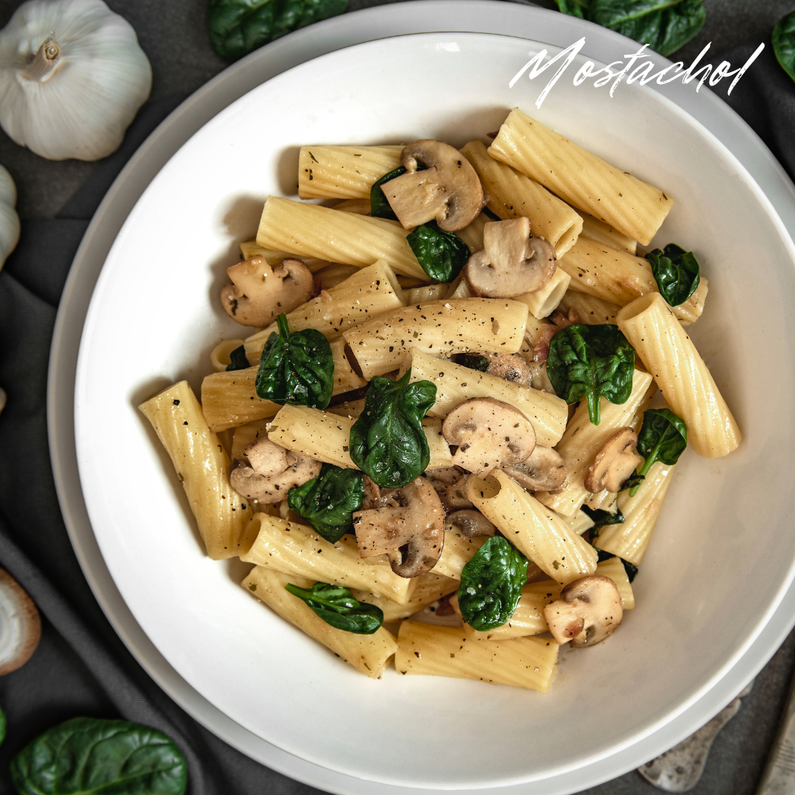
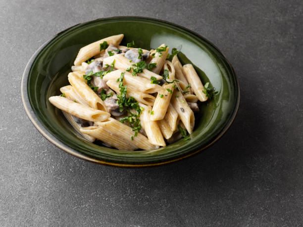

en esta imagen vemos una de las tantas maneras de hacer mostachosles, en este caso con salsa de champiñones
Son una pasta corta, acanalada y con corte diagonal originaria del sur de Italia. Su diseño estriado y su interior hueco están pensados específicamente para retener y atrapar salsas densas o cremosas en cada bocado.
Unir los mostacholes con una crema o salsa de champiñones surgió como una evolución natural dentro de la cocina ítalo-francesa y casera a lo largo del siglo XX, sin atribuirse a un inventor o fecha específica
Para la pasta • 500 g de mostacholes (fideos tipo penne rigate) • Agua y sal gruesa (para la cocción de la pasta) Para la salsa de champiñones • 300 g a 400 g de champiñones (frescos o fileteados) • 1 cebolla (mediana o grande, picada fina) • 2 dientes de ajo (picados o rallados) • 200 cc a 250 cc de crema de leche (nata para cocinar) • 100 cc de vino blanco (opcional, para desglasar) • 2 a 3 cucharadas de aceite de oliva o de girasol (o un toque de manteca) • Sal y pimienta negra (a gusto) • Perejil fresco picado (para decorar al servir)
Cocinar la pasta:• Pon una olla grande con abundante agua y sal gruesa. Cuando hierva, agrega los mostacholes y cocínalos al dente según las instrucciones del paquete. Reserva una taza del agua de cocción antes de colar
Preparar los champiñones:• Limpia los champiñones y córtalos en láminas o rodajas. Pica la cebolla y los dientes de ajo bien pequeños
Hacer la salsa:• En una sartén amplia, calienta el aceite (y la manteca si usas). Agrega el ajo y la cebolla, y sofríe hasta que estén transparentes. • Incorpora los champiñones y saltalos a fuego medio hasta que reduzcan y estén dorados. • Vierte el vino blanco, baja el fuego y deja que se evapore el alcohol (unos 10 minutos). Salpimienta a gusto. • Añade la crema de leche y cocina a fuego bajo durante 5 minutos más hasta que la salsa tome cuerpo y espese.


referencia de donde sacamos la informacions